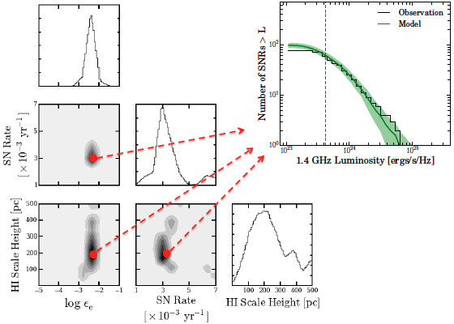

Modelling Supernova Remnant Populations

I have led the development of a statistical model of supernova remnant populations in the Local Group galaxies. The model combines key elements of particle acceleration physics in SNR shocks, and large multi-wavelength datasets to trace the associated ISM and stellar populations. With the observational constraint from radio SNR catalogs, the model provides a statistical estimate of visibility times (the duration of visibility in a survey), which will be useful to calculate DTDs in the Local Group.
Radio-Continuum based Supernova Remnant Catalogs

I am assisting Daniel Huizenga, Jessica Maldonado and Dr. Laura Chomiuk to compile a radio-continuum selected catalog of SNRs in the Local Group galaxies. I am currently reducing EVLA data collected since 2010 on the M31 bulge using AIPS. This pipeline will also be used to image the bulk disk of M31.
Supernova Delay-Time Distribution in the Local Group

The delay-time distribution is the hypothetical rate of an event in stellar evolution (e.g. supernovae) measured after a brief burst of star-formation. It encodes the observed timescales on which these events occur for different progenitor channels, and therefore serve as a powerful, statistical constraint on theoretical models. The DTD can be measured from a survey of objects (SNe) and a set of star-formation histories. The advantage of a Local Group DTD is that the star-formation history will be based on resolved stellar populations, unlike star-formation histories in extra-galactic surveys which are based on integrated spectra and possibly carry unknown systematic biases. By treating a supernova remnant (SNR) survey as an effective SN survey, we can combine these measurements to produce a high-quality DTD, free from the biases of integrated spectra.
Probing the onset of the SNR phase with SN1885a and G1.9+0.3

These young objects of around 100 years fall in between the oldest known SN and the youngest SNR (Cas A), providing observational constraints on these poorly-understood phase of SNR evolution.